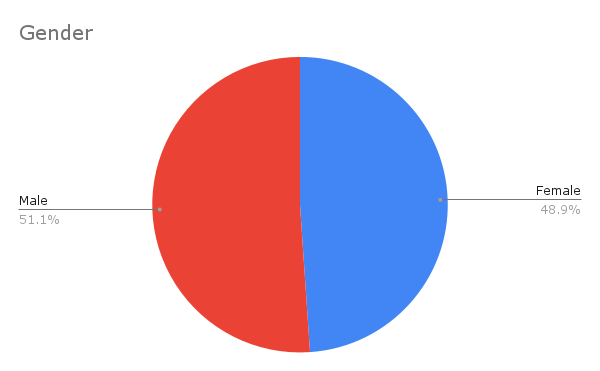
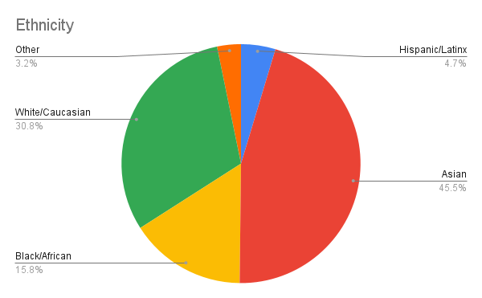

Computer science is one of the fastest-growing industries in the country, and many employers love to hire applicants with coding experience. Mathematics forms the basis of our world, and reasoning skills are needed all throughout life. Engineering is essential for techological innovation in society. We believe that everyone should have the opportunity to build strong foundational skills in computer science, math, and engineering, no matter what their background or location is.
We aim to increase diversity in STEM education. We especially encourage students from underrepresented minorities to enroll in gbSTEM. The following statistics demonstrate the success of our effort.

About 50% of all gbSTEM students are female. Comparatively, women make up around 25% of computer and engineering occupations in the US.

70% of our students are people of color. Over 20% of gbSTEM students are Black or Hispanic. Comparatively, Blacks and Hispanics make up around 17% of all STEM occupations in the US.
At least 19% of gbSTEM students come from a low-income family as indicated by qualification for the Federal Free or Reduced Lunch (FRLP) program. Comparatively, 14.4% of students in Brookline (the town where gbSTEM was founded) qualify for FRLP.
%20eligibility.png)